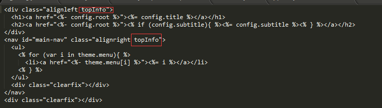
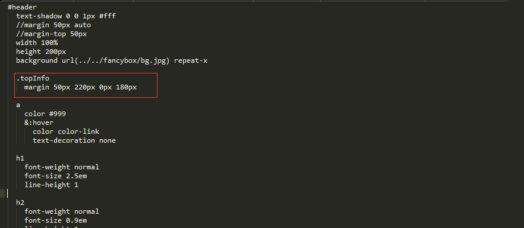
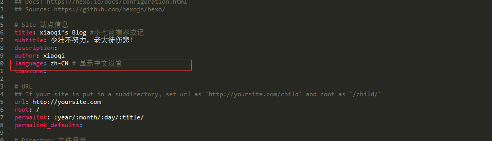

By
xiaoqi
更新日期:
利用hexo搭建博客网上有很多（参考：http://opiece.me/2015/04/09/hexo-guide/）
下面写一下在搭建成功以后所遇到的小问题以及解决方案：
如何给页面添加背景图
1
2
3
4
5
6
7
8
9
| * 首先，先选中一个主题（默认主题也可），我使用的是下载的air主题，下载地址：https://github.com/hustcer/hexo-theme-air。
（3.0以后版本默认主题是landscape）
网上有很多主题（参考：http://www.zhihu.com/question/24422335;https://github.com/hexojs/hexo/wiki/Themes）
* 将需要背景图放在 hexo-theme-air\source\fancybox 文件夹下
* 找到需要替换背景图的位置（每个人的需求不一样可以在chrome浏览器下调试），我需要替换页面的菜单栏的背景图，
即定位到 hexo-theme-air\layout\_partial\header.ejs 文件
如下图设置：
|

1
| * 找到定义该div的css位置，即 hexo-theme-air\source\css\_partial\header.styl，设置属性值，如下图
|

设置成功！我都是在本地先调试，更新之后刷新浏览器即可看到效果，希望对你有用！
设置页面标签显示中文
在hexo文件下的_config.yml里面设置，
1
2
3
4
5
6
7
|
title: 前端
subtitle: 少壮不努力，老大徒伤悲！
description:
author: xiaoqi
language: zh-CN
timezone:
|

这里的zh-CN其实是对应主题下languages文件下的zh-CN.yml,默认是英文的。
菜单分类及在子页面下建文章
1
2
3
4
5
6
7
8
9
10
11
12
13
14
15
16
17
18
19
20
21
22
23
24
25
26
27
28
29
30
31
32
33
34
|
在主题文件下的_config.yml里面设置
menu名称及对应的访问路径
1.第一步：生成post（文章）时默认生成categories配置项：在根目录下scaffolds/post.md中，添加一行categories:。
同理可应用在page.md和photo.md，示例如下：
title: {{ title }}
date: {{ date }}
tags:
categories:
2.第二步：在实际写作时，在开头进行categories配置。例如：
title: Hello，World!你好，世界！
date: 2014-01-21 23:33:02
tags: 写作
categories: 随笔
这样在文章发布时，在git中使用hexo g命令，hexo会在根目录/public/categrises下自动生成归档文件夹，如图：
3.第三步：配置博客首页归档展示样式。在主题配置文件themes/_config.yml中添加以下代码（
menu:
home: /
essay: /categories/随笔
write: /categories/写作
read: /categories/阅读
study: /categories/学习
code: /categories/编程
|
Read more长度的控制
1
2
| hexo 的readmore 是由自己在写文章的时候设定的，在文章正文里面部分的合适位置加上
<!-- more --> 首页的预览就会到标识的位置
|